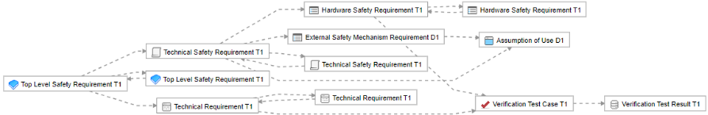
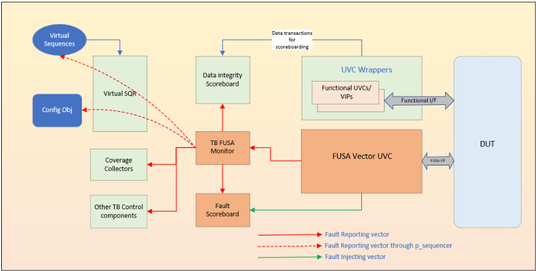
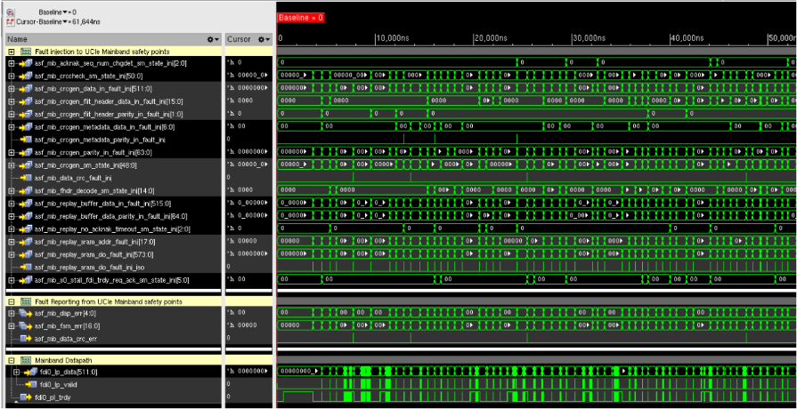
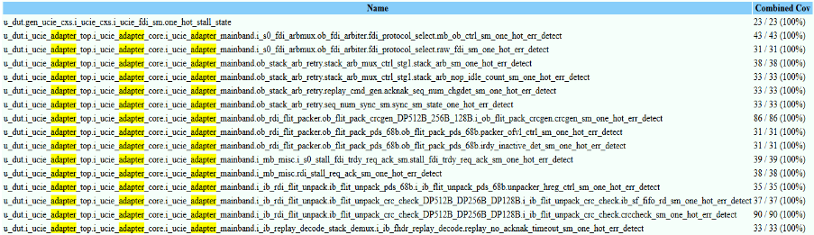
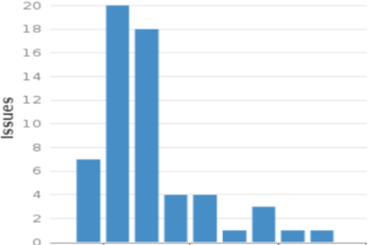

A Generic Functional Safety Vector UVC
一种通用功能安全向量 UVC（FuSa Vector UVC）
简介
随着芯片大量进入汽车领域，ISO 26262 要求 FuSa RTL 从 IP 层即具备故障检测能力，设计中按 TSR 配置的大量 fault instance（parity checker、FSM one-hot、timeout 等）带来数千个故障注入/报告端口，传统 directed testbench 与手工 monitor 验证复杂且难复用。论文提出一种与 DUT 无关的参数化 FuSa Vector UVC：用 packed struct 归纳 DUT 全部故障注入与记录向量，由 UVM agent 在约束随机环境中生成随机故障向量并与功能数据流并发注入，monitor 将故障事务经 analysis port 分发给 scoreboard、coverage collector 与序列，完成故障检测比对、故障后恢复同步与 end-of-simulation 核对。该方法在 Cadence UCIe Controller IP 项目中于 5 个模块级 TB 以 active 方式复用、顶层 TB 以 passive 方式监测多接口，实现 TSR 相关 100% 功能覆盖率；配合 vPlan 经 REST API 映射 Jama Connect 的 RTM 自动化，该 IP 于 2024 年 11 月获得 ISO 26262 ASIL B 认证，6 个月内检出的 FuSa RTL bug 中 75% 在 3 个月内被发现。
问题
符合 ISO 26262 的 FuSa RTL 设计需按 TSR 为每个安全关键项配置 fault instance（parity checker、FSM one-hot 检查、timeout 等），复杂设计中带来成百上千个故障注入/报告 I/O 端口；既有验证手段（directed testbench、不可复用的 pin 级 UVM monitor、formal assertion、寄存器/HDL force 注入）代码量大、复用性差，故障注入难以与功能激励并发，故障后恢复需 testbench 各组件同步，且 TSR 到测试用例/结果的可追溯映射（RTM）维护成本高，难以高效产出 FuSa 认证所需的验证工作产品。
方法
提出参数化、与 DUT 无关的 FuSa Vector UVC：以 packed struct（fault_inj_t/fault_log_t）归纳 DUT 全部可注入故障输入与需监测的故障报告输出，并计算向量宽度作为 UVC 接口与 sequence item 参数；UVM agent 的 driver 按约束随机生成故障注入向量驱动 DUT，monitor 检测注入/报告向量任一翻转即生成事务并经 analysis port 广播；scoreboard 用 generic fault prediction 函数由注入向量预测期望故障报告并与 DUT 实际输出比对，区分内部（Fault Injection Interface）与外部（功能路径 parity/CRC/ECC/FSM one-hot/timeout）故障注入；序列通过 wait_for_interrupt 与 post_err_inj_config 完成故障后恢复同步、中断与 CSR 检查，并用故障队列做 end-of-simulation 核对（确认所有预期注入均被检测、无误报）；功能覆盖率直接从 monitor 事务采样 TSR 覆盖点，验证计划在 Cadence vPlan（vManager）中管理并经 REST API 映射 Jama Connect 形成 RTM。
关键结果
FuSa Vector UVC 已集成到多个模块级与顶层 testbench，可高效处理数千个故障注入与报告向量
在 Cadence UCIe Controller IP（FuSa 认证项目）中跨 5 个模块级 testbench 作为 active 组件复用，并在顶层 testbench 作为 passive 组件监测多接口故障
所有 safety items（TSRs）实现并报告 100% 功能覆盖率（FC），写入 FuSa 验证报告工作产品
对所有 FuSa safety points 在 auditor 参与下单独完成 code coverage 分析，且耗时很短（正文以 Figure 14 给出 UCIe Adapter mainband FSM one-hot 实例示例，未列出具体百分比数值）
6 个月内检出 Cadence UCIe Controller FuSa RTL 相关 bug，其中 75% 在不到 3 个月内被发现（正文未给出 bug 总数数值）
Cadence UCIe Controller 于 2024 年 11 月提交 FuSa 工作产品后获得 ISO 26262 ASIL B 认证，验证报告含 100% 回归与覆盖率指标
创新点
相对已有 directed testbench、不可复用的 pin 级 UVM monitor、formal assertion 与寄存器/HDL force 等注入方式，本文将 DUT 全部故障注入/报告 I/O 抽象为参数化向量并封装为与 DUT 无关的可复用 UVC，使约束随机故障注入可与功能流量并发进行，同一组件可在 module/sub-system/SOC 各层以 active/passive 复用；并通过 Verilog struct 将 monitor 事务直接映射 TSR 覆盖点、经 REST API 打通 vManager 与 Jama Connect，实现验证结果到安全需求的自动追溯。
团队参考意义
相关度级别：high
命中能力域：2.5 功能安全与安全机制 | 2.7 CyberSec/自动化
理由：论文直接命中 2.5 功能安全与安全机制域核心技术：完整覆盖 ISO 26262 SEooC 流程、TSR 派生与 RTM、内部（FII）/外部（功能路径）故障注入、Transient/Latent Fault 与 SFI/DFI 测试要求、安全机制（fault instance）验证及 ASIL B 认证工作产品，与团队 FuSa 安全验证与安全文档职责一致；同时命中 2.7 自动化域：vPlan 经 REST API 映射 Jama Connect、Jira bug 数据统计，与团队 JAMA API/数据源到 FMEDA/DFMEA/JAMA export 自动化能力直接对应。UCIe Controller 与团队 UCie 产品线相邻，但论文内容是 Controller 层 FuSa UVM 验证，不涉及 2.4 域的 UCie PHY DFT/ATPG、IEEE 1838/fabric scan 等测试访问架构，故不计入 2.4；其故障注入与功能流量并发的思路对 2.6 域有方法借鉴，但论文未做 fault grading/detectability 定量分析，故也不计入 2.6。
建议动作：深入精读并做内部分享
中文全文
A Generic Functional Safety Vector UVC
Siril Roy，Cadence Design System，印度班加罗尔（sirilr@cadence.com）
Raghav Sharma，Cadence Design System，印度诺伊达（raghav1@cadence.com）
Kilaru Vamsikrishna，Cadence Design System，印度班加罗尔（kilaruv@cadence.com）
Sushrut B Veerapur，Cadence Design System，印度班加罗尔（sushrut@cadence.com）
摘要——功能安全（FuSa）标准在现代半导体芯片中已成为强制性要求，因为随着行业的不断发展，芯片被大量应用于汽车领域（汽车功能安全标准——ISO26262）。需要在整个寄存器传输级（RTL）设计过程中完成失效分析，并在 RTL 设计中添加必要的安全机制。这意味着，功能安全始于设计知识产权（IPs）。必须基于分析结果为既有 IP 添加与功能安全相关的 RTL，而新 IP 则必须在架构设计阶段纳入功能安全考量。本文展示了在约束随机 UVM 测试平台（TB，模块级或 IP 级测试平台）中使用可复用 UVC（UVM 验证组件）来验证功能安全 RTL 设计的方法。
I. INTRODUCTION
本文提出了一种便捷的方法，用于对符合功能安全（Functional Safety，FuSa）标准的半导体设计进行设计验证。为确保符合 FuSa 要求，RTL 设计必须能够识别设计中出现的任何故障或非预期行为，并确保设计完整性，以使系统维持在安全状态。检测到的中断会依据失效完整性进一步转发至其他设计层级或其他系统组件。所提出的 UVC 简化了压力测试设计注入与处理中断能力的流程，同时确保故障注入与功能设计方面并发执行，并验证设计是否符合 FuSa 标准。
A. Functional Safety (FuSa) Overview
功能安全（FuSa）是指整体系统即使在发生计划外或意外事件的情况下，仍能保持可靠并按预期运行的概念。它提供了如下保证：安全相关系统将提供为设备实现安全所必需的风险降低。FuSa 基于风险降低的概念 [1][2][3]。
实现功能安全需要两类要求：
在汽车领域，风险被量化为 ASIL（Automotive Safety Integrity Level，汽车安全完整性等级）。ISO 26262 依据从最严格到最宽松的安全措施，将风险等级划分为 ASIL - A 至 D [1]。
在 ISO 26262 中，SEooC（Safety Element out of Context，脱离上下文的安全要素）通常适用于由 Tier 2 或 Tier 3 供应商开发的组件，这些供应商可能不具备完整的系统信息。半导体组件可以作为 SEooC 进行开发。SEooC 开发者会对该元件将如何被使用做出假设，并基于这些假设推导出详细的安全要求。
SEooC 流程涉及一系列活动和交付物，以确保组件或软件元件满足所需的安全标准。SEooC 流程中的一些关键步骤包括：
1
B. FuSa compliance RTL Design architecture Overview
技术安全要求（TSR）由假定的功能安全要求推导而来。设计微架构中包含了与每个 TSR 条目相关联的故障实例，例如故障生成器（Fault Generator）或故障检查器（Fault Checker）。这些故障实例在故障发生时充当保护机制。为确保测试的全面性，建议为所有安全关键项实现故障注入支持。这种内部故障注入接口能够支持实时测试，从而实现故障的检测与分析 [4][5][6]。
下面给出了一些常用的故障实例设计。
图 1 是一个奇偶校验故障检查器 RTL 模块的示例。在该模块中，data_in 和 parity_in 信号作为输入，承载实际的功能信息。与之相对，data_in_fault_inj 和 parity_in_fault_inj 分别是与 data_in 和 parity_in 对应的故障注入信号。这两个故障注入信号用于实时测试 [4][5][6]。值得注意的是，信号宽度可以通过输入参数进行控制，同时会生成一个输出信号 parity_err，用于报告检测到的奇偶校验错误。
module parity_checker_example #(parameter DATAPATH_WD = 1024 ) ( input odd_par , input [ DATAPATH_WD - 1 : 0 ] data_in , input [( DATAPATH_WD / 8 )- 1 : 0 ] parity_in , input [ DATAPATH_WD - 1 : 0 ] data_in_fault_inj , input [( DATAPATH_WD / 8 )- 1 : 0 ] parity_in_fault_inj , output parity_err ) wire [( DATAPATH_WD / 8 )- 1 : 0 ] calc_parity ; // Parity Generator for comparision parity_generator (. odd_par ( odd_par ), . data ( data_in ^ data_in_fault_inj ), . parity_out ( calc_parity )); // Error output parity_err = |( calc_parity ^( parity_in ^ parity_in_fault_inj )); endmodule
在复杂的数字设计中，大量的接口、控制与状态寄存器（CSR）、RAM、超时条件、有限状态机（FSM）状态以及其他组件常常相互交织。根据安全手册的要求，每个安全关键项（即各条 TSR）都需要一个故障实例（有助于进入安全状态）。所幸，RTL 设计中的大多数故障实例模块都可以被复用，并可根据所需的参数和输入多次实例化。例如，每个接口数据信号通常都受到奇偶校验保护，因此模块内需要根据接口信号的方向配备奇偶校验生成器或奇偶校验检查器。同一个奇偶校验检查器模块可以被多次实例化，以接口数据信号和奇偶校验信号作为输入，并以数据宽度和奇偶校验宽度作为输入参数。

通常，设计中会提供用于内部故障注入的寄存器，应用层可对这些寄存器进行编程以注入故障。然而，在设计中的每一部分都维护注入和报告寄存器可能是一项挑战。为解决这一问题，大多数微架构都会包含一个故障记录器（Fault logger）模块，通过该模块可以实施内部故障注入。随后，该模块通过布线连接到周围模块内部的所有故障实例。
C. Design Verification for FuSa Certification
在功能安全（FuSa）认证的背景下，验证团队在提供或协助创建对认证过程至关重要的工作产品方面发挥着关键作用。
FuSa认证所需的三项主要验证工作产品是：
验证团队还参与创建需求追溯矩阵（RTM），该矩阵确保每项安全需求都与其对应的验证测试用例和验证结果相关联。像Jama Connect这样的工具专注于需求管理，为有效管理RTM提供了平台。RTM的一个示例如图2所示。作为此过程的一部分，验证团队必须将验证测试用例、验证结果、功能覆盖率以及其他相关数据映射到适用的技术安全需求（TSRs）或技术需求（TRs）。这种细致的映射确保了整个验证过程的清晰性和可问责性。安全手册中提到的安全项必须通过注入瞬态故障和潜伏故障来进行测试。这些测试用例必须通过RTM展示与TSRs的关联。此外，对于被测器件（DUT）中所有已识别的安全项，还需要进行单故障中断（SFI）和双故障中断（DFI）测试。

用于FuSa设计验证的测试平台，除其他功能验证方法外，还必须支持以下项目。
故障注入可以通过两种主要方法执行：故障注入接口（FII）或功能路径。在本文中，通过故障注入接口进行的故障注入称为内部故障注入，而通过功能路径进行的注入称为外部故障注入。外部故障注入的示例包括：通过接口发送错误的奇偶校验、在数据包中发送错误的循环冗余校验（CRC），或在随机存取存储器（RAM）的读数据中呈现错误的纠错码（ECC）。
3
A. Existing verification Methodology
定向测试平台开发：这涉及创建一个测试平台环境，用于验证被测设计（DUT）的特定功能需求。定向测试专注于检查设计的特定行为或事务。在此阶段编写的测试用例被设计为独立运行，具有特定的预期结果，并且仅对这些预期结果进行检查。为激励每个故障实例，创建了大量与功能安全（FuSa）相关的定向测试用例，并在每个测试中对故障记录和中断断言进行测试。
故障记录监视器与检查器：在经典的 FuSa 方法学中，只有当编写了特定测试以捕获测试所需的信号值时，才会在被验证设计（DUV）内部添加监视器元件。仿真后的结果通过人工方式或借助脚本进行验证，并与预期结果进行比较。创建了一个引脚级的通用验证方法学（UVM）监视器逻辑，用于监测 DUT 的每一个中断端口。这种监视器不可复用，并且当中断/错误引脚较多时会产生大量代码行。
约束随机 UVM 测试平台：该测试平台在开发时采用了一组约束，将随机测试用例限制为仅可行的用例。约束随机验证有助于确保覆盖特定的边角情况、条件分支或可参数化的条件，同时通过约束指令进行调控。故障注入会在测试平台中引发大量问题，测试平台中的故障注入处理逻辑也导致测试平台变得复杂。通常，故障注入可以通过寄存器、破坏接口总线、外部故障注入输入信号、硬件描述语言（HDL）force 等方式完成。对于所有这些情况，需要大量测试平台逻辑来实现平稳的测试仿真，包括适当的检查器、数据流量、有限状态机（FSM）状态变化等。如果设计需要符合 FuSa 要求，这种复杂性会显著增加。
形式验证检查：验证工程师为指定的功能创建了断言检查。为 DUT 的所有故障实例创建形式检查需要大量的时间和精力。
B. Introduction to FuSa Vector UVC
Both creating new FuSa compliance testbenches and enhancing existing testbenches to meet FuSa compliance requirements involve significant time and effort, requiring multiple debug cycles. The design under test (DUT) must recover from a fault state through a smooth transition, with each part of the testbench synchronized with the recovery steps. The complexity of this process increases substantially as the number of safety items, also known as TSRs, grows.
FuSa compliance RTL modules typically comprise hundreds of fault instances, depending on the complexity of the DUT. This leads to thousands of fault injection or reporting input/output (I/O) ports, assuming that the error or fault injecting and logging registers are not part of the DUT module. Usually, the fault logger takes input from various modules, logs the status inside a register, and provides a few output interrupts.
This paper presents a reusable FuSa Vector UVC (Universal Verification Component) designed to be integrated into any constraint-random UVM (Universal Verification Methodology) testbench that involves fault injection and reporting I/Os.
The primary benefit of this UVC is the simplification of testbench complexity, particularly for FuSa compliant RTL designs that feature fault injection and fault logging I/Os. By utilizing the FuSa Vector UVC, users can generate constraint-random fault injection vectors, which can then be employed to inject faults into any part of the safety requirements. Furthermore, this UVC streamlines testbench logic related to fault injection and reporting within scoreboards, sequences, coverage collectors, and other components.
Figure 3 shows UVC interface example with injection and logging signals vectors declared. This signal width must be decided by the UVC user based on the DUT interface.

interface fusa_vector_uvc_if ( input bit clk , input bit rst_n ); logic [ FUSA_VECTOR_UVC_FAULT_INJ_VEC_WD - 1 : 0 ] fault_inj_vector ; logic [ FUSA_VECTOR_UVC_FAULT_LOG_VEC_WD - 1 : 0 ] fault_log_vector ; // Monitor clocking block clocking monitor_cb @(posedge clk ); input fault_inj_vector ; input fault_log_vector ; endclocking // Clocking block for driver clocking driver_cb @(posedge clk ); output fault_inj_vector ; endclocking // producer_cb endinterface
module sample_rtl #( parameter DATAPATH_WD = 1024 ,parameter ADDR_WD = 128 ) ( input clk ,input rst ,input [ ADDR_WD - 1 : 0 ] addr_ingress ,input [ ADDR_WD - 1 : 0 ] addr_ingress_fault_inj ,input [( ADDR_WD / 8 )- 1 : 0 ] addr_ingress_par ,input [( ADDR_WD / 8 )- 1 : 0 ] addr_ingress_par_fault_inj ,output addr_ingress_error_out ,output [ ADDR_WD - 1 : 0 ] addr_egress ,input [ ADDR_WD - 1 : 0 ] addr_egress_fault_inj ,output [( ADDR_WD / 8 )- 1 : 0 ] addr_egress_par ,input [( ADDR_WD / 8 )- 1 : 0 ] addr_egress_par_fault_inj ,output addr_egress_error_out ,input [ DATAPATH_WD - 1 : 0 ] data_ingress ,input [ DATAPATH_WD - 1 : 0 ] data_ingress_fault_inj ,input [( DATAPATH_WD / 8 )- 1 : 0 ] data_ingress_par ,input [( DATAPATH_WD / 8 )- 1 : 0 ] data_ingress_par_fault_inj ,output data_ingress_error_out ,output [ DATAPATH_WD - 1 : 0 ] data_egress ,input [ DATAPATH_WD - 1 : 0 ] data_egress_fault_inj ,output [( DATAPATH_WD / 8 )- 1 : 0 ] data_egress_par ,input [( DATAPATH_WD / 8 )- 1 : 0 ] data_egress_par_fault_inj ,output data_egress_error_out //-- Other I/Os for the functionality ) // RTL Functional logic // Fault instance : Parity Chekers instance for ingress address parity_checker_example #(. DATAPATH_WD ( DATAPATH_WD )) checker_addr_ingress ( . odd_par ( 1'b1 ) ,. data_in ( addr_ingress ) ,. parity_in ( addr_ingress_par ) ,. data_in_fault_inj ( addr_ingress_fault_inj ) ,. parity_in_fault_inj ( parity_in_fault_inj ) ,. parity_err ( addr_ingress_error_out )); // Similar connections for other signals parity_checker_example #(. DATAPATH_WD ( DATAPATH_WD )) checker_addr_egress(//*port connections*//); parity_checker_example #(. DATAPATH_WD ( DATAPATH_WD )) checker_data_ingress(//*port connections*//); parity_checker_example #(. DATAPATH_WD ( DATAPATH_WD )) checker_data_engress(//*port connections*//); endmodule
5

The integration and verification of FuSa Vector UVC are elucidated through example design and testbench codes. Figure 4 illustrates an example DUT that incorporates four parity checker instances to perform parity checking on interface input data. The parity checker instance module is depicted in Figure 1. Each checker has input injection vectors for fault injection and a corresponding output wire for fault reporting, facilitating comprehensive fault analysis and detection.
The FuSa Vector UVC is a comprehensive verification component that consists of a UVM sequencer, driver, and monitor, all encapsulated within a UVM agent.
该序列项（sequence item）被设计为包含两个主要的向量变量：故障注入和故障检测。这些向量的大小是可参数化的，从而在各种验证环境中提供了灵活性和可扩展性。在集成时，UVC 用户必须定义该参数，以使 UVC 适应特定模块的需求。此外，该序列项还可以扩展，以包含基于特定验证需求而定制的控制变量，从而为测试场景开发提供更大的灵活性。为满足特定需求，用户可以扩展 FuSa Vector UVC 的序列项类来创建自定义类，并根据需要重写父类。而且，该 UVC 的接口通过采用相同的参数化向量来保持一致性，从而确保序列项与接口之间保持对齐。
// Parameters are user defined class fusa_vector_uvc_seq_item #(int INJ_VECTOR_SIZE = 100 , int LOG_VECTOR_SIZE = 100 ) extends uvm_sequence_item ; // Variable : Vector for Fault Injection, rand logic [ INJ_VECTOR_SIZE - 1 : 0 ] fault_inj_array ; // Variable : Vector for Fault Reporting rand logic [ LOG_VECTOR_SIZE - 1 : 0 ] fault_log_array ; function new (string name = "fusa_vector_uvc_seq_item" ); super. new ( name ); endfunction // Tasks and functions to be performed over transcation endclass
forever begin // Create a new monitor object monitor_trans = fusa_vector_uvc_seq_item :: type_id :: create ( "monitor_trans" , this); // Indicate the start of a monitor transaction void' ( begin_tr ( monitor_trans )); monitor_trans . fault_inj_array = vif . monitor_cb . fault_inj_vector ; monitor_trans . fault_log_array = vif . monitor_cb . fault_log_vector ; // Indicate the end of a monitor transaction & trigger callback void' ( end_tr ( monitor_trans )); monitor_ap . write ( monitor_trans ); // Wait until a transaction has started. do begin @( vif . monitor_cb ); end while (( monitor_trans . fault_inj_array === vif . monitor_cb . fault_inj_vector ) && ( monitor_trans . fault_log_array === vif . monitor_cb . fault_log_vector )); end
该 UVC 监控器（monitor）的设计使得注入向量或报告向量的任何翻转都会创建一个事务项（transaction item），并将其发送到分析端口（analysis port）。随后，用户可以获取该事务项，并根据其中的值执行所需的处理。图 6 展示了该监控器 run phase 逻辑的一个示例。

C. Integration of FuSa Vector UVC in to the Testbench
Figure 7 illustrates an example Testbench architecture diagram with an integrated FuSa Vector UVC. The FuSa Vector UVC initiates fault vector transactions using a virtual sequencer. Monitored transactions are sent to a fault scoreboard and other necessary components through an analysis port, depicted by the green line. When a fault is detected, monitored transaction item is shared across the Testbench components via the red line. Some sequences wait for the reported fault, which can be accessed through the p_sequencer handle (shown as red dotted line).

//-- Fault Injection packed Struct typedef struct packed { logic [ ADDR_WD - 1 : 0 ] addr_ingress_fault_inj ; logic [( ADDR_WD / 8 )- 1 : 0 ] addr_ingress_par_fault_inj ; logic [ ADDR_WD - 1 : 0 ] addr_egress_fault_inj ; logic [( ADDR_WD / 8 )- 1 : 0 ] addr_egress_par_fault_inj ; logic [ DATAPATH_WD - 1 : 0 ] data_ingress_fault_inj ; logic [( DATAPATH_WD / 8 )- 1 : 0 ] data_ingress_par_fault_inj ; logic [ DATAPATH_WD - 1 : 0 ] data_egress_fault_inj ; logic [( DATAPATH_WD / 8 )- 1 : 0 ] data_egress_par_fault_inj ; } fault_inj_t ; //-- Fault Log packed Struct typedef struct packed { logic addr_ingress_error_out ; logic addr_egress_error_out ; logic data_ingress_error_out ; logic data_egress_error_out ; } fault_log_t ; //-- 2 addr signals, 2 addr_par signals, 2 data signals, 2 data_par signals parameter FUSA_VECTOR_UVC_FAULT_INJ_VEC_WD = (ADDR_WD + ( ADDR_WD / 8 ) + DATAPATH_WD + g ( DATAPATH_WD / 8 )) * 2; //-- 4 report signals parameter FUSA_VECTOR_UVC_FAULT_LOG_VEC_WD = 4 ;
It is highly recommended to create a fault injection structure that includes all the input signals of the DUT where faults can be injected, as well as a fault logging structure that comprises all the output signals of the DUT that require monitoring and reporting. Additionally, it is essential to calculate the fault injection vector size and fault logging vector size parameters. Figure 8 illustrates an example of how these structures can be created and the corresponding parameter calculations can be performed.
7

D. Random Fault generation and fault checks using FuSa Vector UVC
随机故障注入数据由 UVC 驱动器驱动到虚拟接口上，从而实现动态且逼真的故障仿真。这为测试设计的可靠性和容错能力提供了一种稳健的方法。为了将接口信号连接到 DUT，采用了图 8 中所说明的 DUT 特定故障信号结构。这使得验证环境能够模拟真实世界的场景，并测试 DUT 对故障的响应。图 9 展示了在 TB 顶层模块中例化 DUT 的示例，并演示了 FuSa vector UVC 接口与 DUT 输入/输出之间的连接方法。
module fusa_top_tb_example ()
//--- FuSa UVC 接口句柄 ---
fusa_vector_uvc_if uvc_if ( intf_wrapper . clk , intf_wrapper . rst );
//--- 包含故障注入信息的结构体 ---
fault_inj_t fault_inj ;
//--- 包含已记录故障信息的结构体 ---
fault_log_t fault_log ;
//--- FuSa Vector 与 UVC 接口之间的连接 ---
assign fault_inj = uvc_if . fault_inj_vector ;
assign uvc_if . fault_log_vector = fault_log ;
//--- 控制器接口 ---
tb_intf_wrapper intf_wrapper ();
//--- RTL 例化 ---
sample_rtl #(. DATAPATH_WD ( 1024 )) DUT (
. clk ( intf_wrapper . clk ) ,
. rst ( intf_wrapper . rst ) ,
. addr_ingress ( intf_wrapper . addr_ingress ) ,
. addr_ingress_fault_inj ( fault_inj . addr_ingress_fault_inj ) ,
. addr_ingress_par ( intf_wrapper . addr_ingress_par ) ,
. addr_ingress_par_fault_inj ( fault_inj . addr_ingress_par_fault_inj ) ,
. addr_ingress_error_out ( fault_log . addr_ingress_error_out ) ,
. addr_egress ( intf_wrapper . addr_egress ) ,
. addr_egress_fault_inj ( fault_inj . addr_egress_fault_inj ) ,
. addr_egress_par ( intf_wrapper . addr_egress_par ) ,
. addr_egress_par_fault_inj ( fault_inj . addr_egress_par_fault_inj ) ,
. addr_egress_error_out ( fault_log . addr_egress_error_out ) ,
. data_ingress ( intf_wrapper . data_ingress ) ,
. data_ingress_fault_inj ( fault_inj . data_ingress_fault_inj ) ,
. data_ingress_par ( intf_wrapper . data_ingress_par ) ,
. data_ingress_par_fault_inj ( fault_inj . data_ingress_par_fault_inj ) ,
. data_ingress_error_out ( fault_log . data_ingress_error_out ) ,
. data_egress ( intf_wrapper . data_egress ) ,
. data_egress_fault_inj ( fault_inj . data_egress_fault_inj ) ,
. data_egress_par ( intf_wrapper . data_egress_par ) ,
. data_egress_par_fault_inj ( fault_inj . data_egress_par_fault_inj ) ,
. data_egress_error_out ( fault_log . data_egress_error_out )
);
endmodule
这款面向功能安全（FuSa）应用的 UVC 允许序列对 FuSa Vector 序列项进行随机化，并生成受约束的随机故障向量。此外，来自监视器（monitor）的事务项可用于在各种功能性（外部）故障注入场景中验证故障断言，包括接口数据上的奇偶校验故障注入、循环冗余校验（CRC）故障注入、纠错码（ECC）故障注入、有限状态机（FSM）独热故障注入以及超时（Timeout）故障注入等场景。该 UVC 通过分析端口（analysis port）提供监视到的向量，使验证平台（testbench）能够利用这些事务项进行记分板比对、覆盖率分析、验证平台控制以及其他用途。

图 10 展示了基于一个示例约束进行故障向量生成的例子。图中还展示了一些与故障注入前的配置以及故障注入后的检测检查相关的任务。
class fusa_vector_uvc_seq extends uvm_sequence ; rand fault_inj_t err_inj_array ; // Testbench config object for creating test scenarios fusa_tb_scenario tb_sceanrio ; // Variable declarations for other sequence control `uvm_object_utils ( fusa_vector_uvc_seq ) `uvm_declare_p_sequencer ( vsequencer ) // Constraint to control Fault Injection Types and Scenarios constraint addr_egress_par_fault_inj_c { if( tb_sceanrio . addr_egress_corruption_en ) { $countones ({ err_inj_array . addr_egress_par_fault_inj , err_inj_array . addr_egress_fault_inj } > 0 ) ; } } // Constructor other methods // Task: body virtual task body (); fusa_vector_uvc_seq_item #( INJ_VECTOR_SIZE , LOG_VECTOR_SIZE ) fusa_uvc_seq ; // Create Fusa_fault_uvc sequence item //TODO add parameters `uvm_create_on ( fusa_uvc_seq (), p_sequencer . fusa_vector_uvc_sqr ) // Pre-Error injection process ( Register Configurations( Mask, Severity, Control etc.) ) pre_err_inj_config (); // Sequence start `uvm_rand_send_with ( fusa_uvc_seq , { fault_inj_array == local:: err_inj_array ; }) // wait for the Interrupt log vector from Fusa vector UVC monitor wait_for_interrupt (); // Post-Error detection process ( Interrupt checks and CSR Checks ) post_err_inj_config (); endtask // body endclass // fusa_vector_uvc_seq
集成了 fusa Vector UVC 的验证平台（TB）可以基于故障注入生成期望的事务项，并进一步将来自被测设计（DUT）的实际故障与期望事务项进行比较。这些故障队列还可用于在仿真结束时执行检查，以确保所有预期的故障注入均成功发生，且 DUT 未检测到任何非预期的故障。
该 UVC 还可以作为用于监控故障的被动代理（passive agent）集成到多个层级中，例如子系统、片上系统（SOC）以及顶层测试平台。为了清晰说明内部故障与外部故障的记分板（scoreboarding）机制，提供了示例代码加以说明，例如图 11 和图 12 所示，这些示例区分了这两类故障。
9

virtual function void write_exp_fusa_uvc ( fusa_vector_uvc_seq_item trans ); fault_inj_t fault_inj_vector ; fault_log_t fault_log_vector ; if( ! $cast ( fault_inj_vector , trans . fault_inj_array )) `uvm_error ( get_name (), "Dynamic casting failed" ) // -- 基于注入预测日志向量 if ( $countones ( trans . fault_inj_array ) > 0 ) begin fault_log_vector = generic_fault_prediction ( fault_inj_vector ); exp_fault_log_array_q . push_back ( fault_log_vector ); end //-- 其他函数代码 -- endfunction //-- 基于错误注入向量预测错误报告向量 virtual function fault_log_t generic_fault_prediction ( input fault_inj_t err_inj ); fault_log_t err_log ; err_log . addr_ingress_error_out = (|{ err_inj . addr_ingress_fault_inj , __________________________________________err_inj . addr_ingress_par_fault_inj }) ? 'h1 : 'h0 ; err_log . addr_egress_error_out = (|{ err_inj . addr_egress_fault_inj , __________________________________________err_inj . addr_egress_par_fault_inj }) ? 'h1 : 'h0 ; err_log . data_ingress_error_out = (|{ err_inj . data_ingress_fault_inj , __________________________________________err_inj . data_ingress_par_fault_inj }) ? 'h1 : 'h0 ; err_log . data_egress_error_out = (|{ err_inj . data_egress_fault_inj , __________________________________________err_inj . data_egress_par_fault_inj }) ? 'h1 : 'h0 ; return err_log ; endfunction
virtual function void write_dut_ingress_trans ( dut_trans_item trans ); dut_trans_item pred_trans ; fault_log_t fault_log_vector ; //-- 创建 pred_trans，然后基于接收到的 addr 信号更新奇偶校验位 pred_trans . addr_ingress_par = calc_parity ( trans . addr ); //-- 外部错误预测示例 fault_log_vector . addr_ingress_error_out = ( trans . addr_ingress_par != pred_trans . addr_ingress_par ) ? 1'b1 : 1'b0 ; //-- 其他故障向量预测 //-- 在完成所有预测后将该项送入期望队列 if ( $countones ( fault_log_vector ) > 0 ) begin exp_fault_log_array_q . push_back ( fault_log_vector ); end //-- 其他函数代码 -- endfunction
III. RESULTS
功能安全（FuSa）向量通用验证组件（UVC）已成功集成到模块级和顶层的多个测试平台（TB）中，并高效地处理了数千个故障注入向量和报告向量。凭借其模块化和可扩展的架构，FuSa 向量 UVC 已在各种用例中被有效地用于动态故障注入、全面的检查器覆盖以及监控目的。
本文所提出的方法已成功应用于 UCIe（Universal Chiplet Interconnect Express）控制器 IP（FuSa 认证 IP）项目中，该项目是一个高度可配置且复杂的设计。FuSa 向量 UVC 作为主动组件在五个模块级测试平台中被复用，并在顶层测试平台中作为被动组件用于各种接口。该 UVC 的稳定性和有效性已得到充分验证，在项目所涉及的所有测试平台中均取得了成功的结果。

请查看 UCIe 适配器模块测试平台的仿真快照，其中展示了跨不同安全点的随机故障注入以及数据流量。图 13 展示了针对若干 UCIe 适配器 mainband 安全点的故障注入及流量的波形图。输出故障断言和数据流量信号也在图中进行了高亮标注。

考虑到 FuSa 验证的关键性，我们在审核员的参与下，针对所有 FuSa 安全点执行了单独的代码覆盖率分析。这项工作在极短的时间内完成。以下是针对 UCIe 适配器 mainband 有限状态机（FSM）独热（one-hot）RTL 实例所获得的代码覆盖率（CC）结果的若干示例。

为证明验证完整性，需要展示所有安全项（技术安全需求，TSR）达到百分之百的功能覆盖率（FC）。值得注意的是，该 UVC 支持使用 Verilog 结构体将监测到的故障报告向量与 TSR 接口信号进行直接转换。因此，我们能够在从 FuSa 向量 UVC 监视器接收到事务项（transaction item）后，立即采样所有与 TSR 相关的 FC 元素。这种方法使我们能够在 FuSa 验证报告工作产品中实现并报告 100% 的 FC。
为了创建和管理 FC 计划，我们在 vManager 工具中使用 Cadence vPlan（Verification Plan，验证计划）。随后，该计划通过 REST API 无缝映射到 Jama Connect，从而在极短的时间内建立了验证结果与相应 TSR 之间的关联。FC 闭合度指标展示了在 Jama Connect 中被标记为通过的验证测试结果，表明测试套件已达到令人满意的功能覆盖率水平。
11

在6个月的时间范围内，共检测到与Cadence UCIe控制器功能安全（FuSa）RTL设计相关的缺陷（bug）。其中高达75%的缺陷在不到3个月内即被识别。展示这一趋势的图表基于从Jira软件中提取的数据绘制而成，该数据经过专门筛选，聚焦于与Cadence UCIe控制器FuSa功能相关的缺陷。

在2024年11月提交FuSa工作产品后，Cadence UCIe控制器获得了ISO26262 ASIL B认证。验证报告基于100%的回归测试和覆盖率指标编制。所有安全点均通过内部和外部故障注入完成验证，并将所有这些指标映射至Jama Software以供审查。
A. Other Benefits of using FuSa Vector UVC

IV. CONCLUSION
FuSa Vector UVC 显著简化了验证平台的开发，并缩短了面向功能安全（FuSa）合规的 RTL 设计的验证时间。由于其具备可复用性，并且能够无缝集成到现有及新建的验证平台中，我们强烈推荐该 UVC。它可应用于多种层级，包括模块级、子系统级和 SOC 级验证平台，并适用于任何 UVM 验证平台环境。该 UVC 有助于快速识别设计缺陷，并提供了故障注入后易于实现的同步技术，使其成为实现高效验证的更可行选择。值得注意的是，该 UVC 完全独立于被测设计（DUT），这表明验证平台本身应当能够针对每个 FuSa 验证测试用例进行适配。